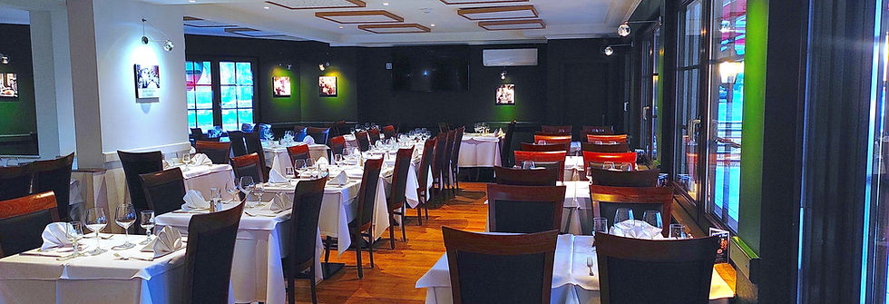
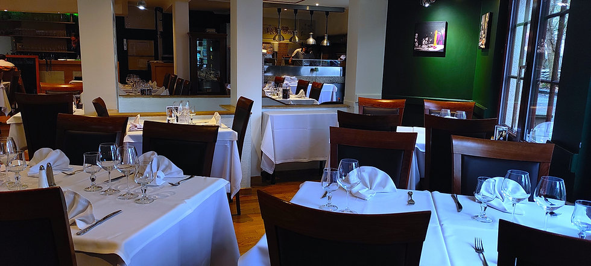
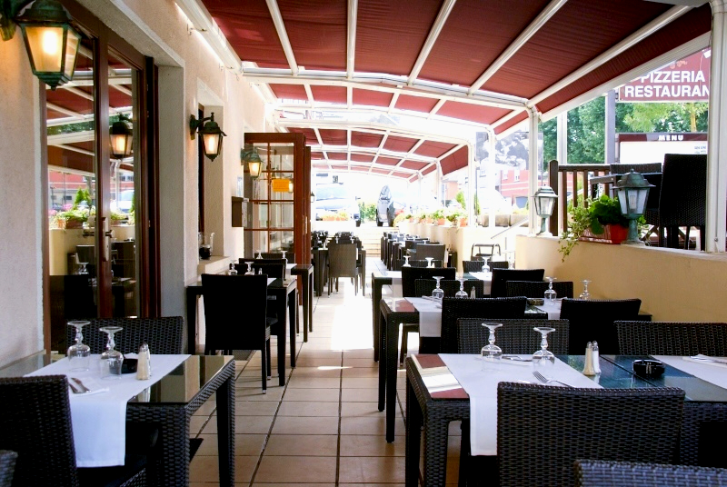
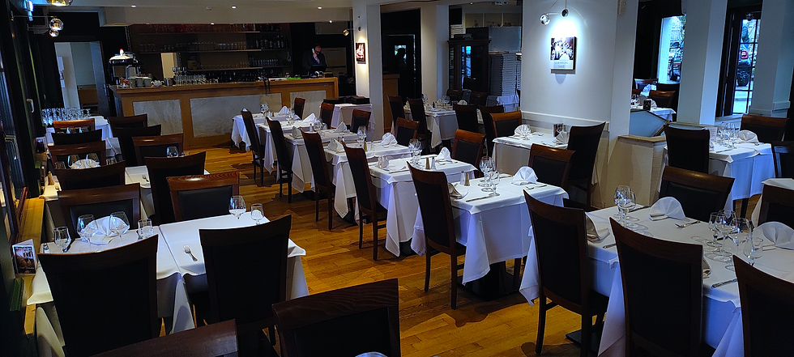

CarpiniBascharage — au feu de bois
« La cuisine italienne au feu de bois, à Bascharage depuis 1986. »
Slogan proposé — à valider avec l'établissement.
Le four à bois, allumé chaque service
Au centre de la salle, le four à bois brûle en continu : pizzas al forno à la pâte longuement levée, pâtes fraîches faites maison, poissons et viandes saisis à la flamme. Une cuisine ouverte, à la vue de tous — comme dans les trattorias où l'on n'a rien à cacher.
Notre carte
Un extrait de la maison — pâtes maison, pizzas al forno, poissons & antipasti.
Sélection indicative · prix en euros · carte complète et tarifs à confirmer avec l'établissement.
Antipasti Pour commencer
Pasta Fatta in casa
Pizze al forno Au feu de bois
Pesce & mare Poissons & mer
Tiramisù maison (10,20) · suggestions du marché du chef · un digestif offert en fin de repas, à la manière de la maison.
Quarante ans, une même famille
De la première salle à Bascharage au Groupe Carpini d'aujourd'hui, une histoire italienne écrite au Luxembourg — repère fait maison depuis 1986.
La première salle
La famille Carpini ouvre sa trattoria — feu de bois et pâtes maison dès le premier jour.
La famille grandit
Une maison devient un groupe de tables italiennes réparties à travers le Luxembourg.
Dîner & séjour
À Bascharage, l'Hôtel Carpini partage l'adresse : on dîne, puis l'on reste.
Toujours au feu de bois
Quarante ans plus tard, le même four, la même famille, la même exigence.
La table, mise chaque jour
Nappes blanches, parquet chaleureux, mur végétal, four à bois ouvert — et, aux beaux jours, la terrasse couverte sous l'auvent rouge.

Nappes blanches
L'ambiance
La terrasse, sous l'auvent rouge
Le détailHôtel Carpini — dîner, puis rester
L'hôtel partage l'adresse du restaurant à Bascharage : idéal pour les convives de passage, les fêtes de famille et les hôtes venus de France ou de Belgique. Détails & disponibilités à confirmer avec l'établissement.
Réserver une table
Inscrivez votre table au registre — nous confirmons par téléphone.
Commander en ligne
Livraison à domicile et à emporter, via nos partenaires — ou la livraison maison Wedely.
Horaires indicatifs — à confirmer avec l'établissement (les sources varient).
Sur réservation, la maison offre le gâteau et une coupe de Spumante à l'ensemble de votre table.
Route de Luxembourg, Bascharage
79, route de Luxembourg
L-4950 Bascharage
Luxembourg
Restaurant · Pizzeria · Terrasse
& Hôtel Carpini
info@carpini.lu
Groupe Carpini · depuis 1986